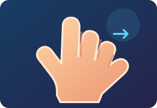
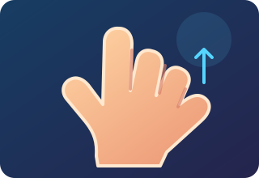

Multimodal presence, bounded memory, and safety-aware interaction design.
Explore Our Project →Our AI Therapist aims to provide natural human-like communication by coordinating language, voice, facial expressions, gaze, posture and hand movements.
Language, voice, face, gaze, posture and hand movement must behave as one experience.
Use realism to improve communication without implying consciousness or clinical authority.
The system uses five interconnected layers to create a coordinated AI Therapist experience.
The AI listens to the user, understands the conversation, generates a response and communicates through voice and expressions.
Capture the user's voice.
Understand the user's message and context.
Create an appropriate conversational response.
Deliver the response through synchronized voice and avatar expressions.
The AI Therapist uses natural human hand movements to express emotions, explain ideas and communicate with users more effectively.
Used for welcoming users and creating a friendly environment.

Used while explaining ideas and providing helpful information.
Gentle hand movements that support empathetic communication.

Used to emphasize important points and provide guidance.
Transparent central governance of memory and safety controls.
Detect signals that indicate needs beyond the application's scope.
Provide region-appropriate support routes.
Bounded, inspectable and correctable memory management.
Latency, transcription quality, relevance and interruption recovery.
Perceived listening, agency, comfort and appropriate trust.
False negatives, false positives, escalation quality and consistency.
Voice and text with a simple avatar.
Add gaze, facial expression and constrained gestures.
Introduce memory, safety evaluation and moderated pilots.